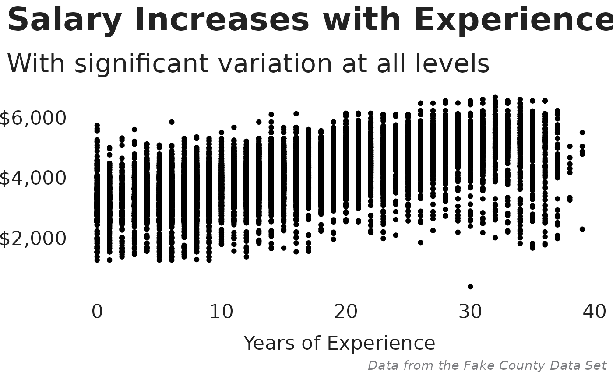
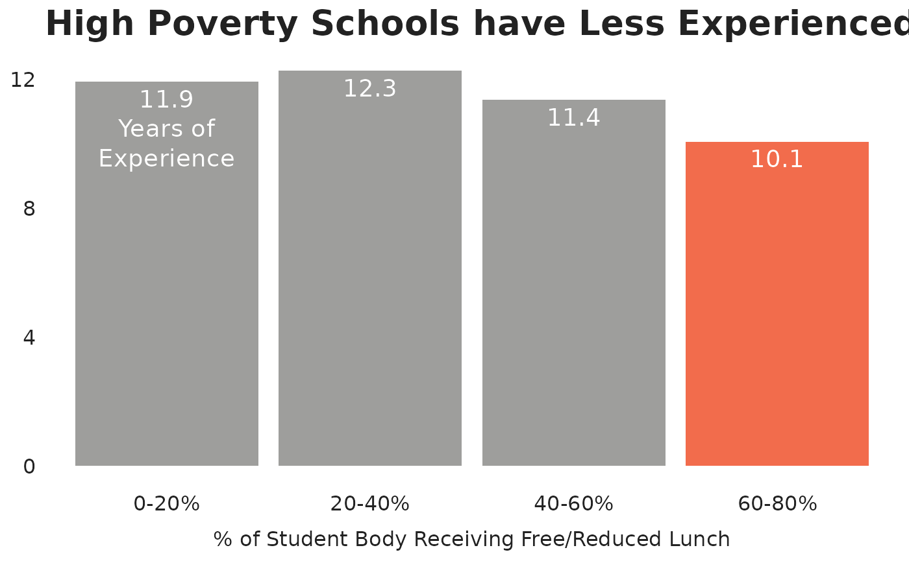

A custom theme including TNTP fonts and other defaults for styling ggplot2 charts.
Usage
tntp_style(
family = "Halyard Display",
header_family = family,
base_size = 28,
text_color = "#222222",
caption_color = "#7D7E81",
show_legend_title = FALSE,
show_axis_titles = FALSE,
grid = FALSE,
grid_color = "#CBCBCB",
title_align = "left",
legend_align = "left",
caption_align = "right"
)Arguments
- family
Base font family. Defaults to "Halyard Display".
- header_family
Font family for title and subtitle. Defaults to the base font family.
- base_size
Base font size. Recommended minimum value of 15.
- text_color
Text color for titles, axes, legends, and facets.
- caption_color
Text color for caption.
- show_legend_title
Logical. Should the legend title be shown? Leave as
TRUEif you want to change the legend title with a subsequent line+ labs(...).- show_axis_titles
Which axis titles should be shown? Use
TRUEorFALSEfor toggle both titles, orxoryto show just that axis title.- grid
Which grid lines should be shown? Use
TRUEorFALSEto toggle all grid lines, or a string combination ofX,x,Y,yfor major and minor x and y grid lines.- grid_color
Grid line color.
- title_align, legend_align, caption_align
Alignment of title, legend, and caption. Accepts
left,right, orcenter.
Examples
# \donttest{
library(dplyr)
library(ggplot2)
fake_county |>
filter(t_salary > 0) |>
ggplot(aes(t_experience, t_salary)) +
geom_point() +
scale_y_continuous(labels = scales::dollar) +
labs(
title = "Salary Increases with Experience",
subtitle = "With significant variation at all levels",
x = "Years of Experience",
caption = "Data from the Fake County Data Set"
) +
tntp_style(family = 'sans', show_axis_titles = "x")

frpl_experience <- fake_county |>
mutate(frpl_bucket = cut(sch_frpl_pct,
breaks = c(0, 20, 40, 60, 80, 100),
labels = c("0-20%", "20-40%", "40-60%", "60-80%", "80-100%")
)) |>
group_by(frpl_bucket) |>
summarize(avg_experience = mean(t_experience, na.rm = TRUE)) |>
mutate(
label = as.character(round(avg_experience, digits = 1)),
label = if_else(frpl_bucket == "0-20%", paste0(label, "\nYears of\nExperience"), label)
)
frpl_experience |>
ggplot(aes(frpl_bucket, avg_experience)) +
geom_col(fill = if_else(frpl_experience$frpl_bucket == "60-80%",
tntp_colors("tangerine"),
tntp_colors("medium_gray")
)) +
geom_text(aes(label = label),
nudge_y = -0.25, vjust = 1,
color = "white", size = 5, lineheight = 1
) +
labs(
title = "High Poverty Schools have Less Experienced Teachers",
x = "% of Student Body Receiving Free/Reduced Lunch"
) +
scale_y_continuous(breaks = seq(0, 20, 4)) +
tntp_style(
family = "sans",
base_size = 20,
show_axis_titles = "x"
)

# }